Ми об'єднуємо українську діаспору та іспанське суспільство на Канарських островах. Підтримуємо, захищаємо, розвиваємо — з 2017 року.
Провідна організація української громади на Канарських островах. Асоціацію заснувала у 2017 році Олеся Лилак-Чижович.
Ми об'єднуємо українську діаспору та іспанське суспільство, допомагаючи мігрантам орієнтуватися в новому середовищі, налагоджувати культурний діалог і створювати стійку, підтримуючу спільноту.
«Дві землі — один народ. Ми будуємо майбутнє, тримаючи в серці обидва сонця.»
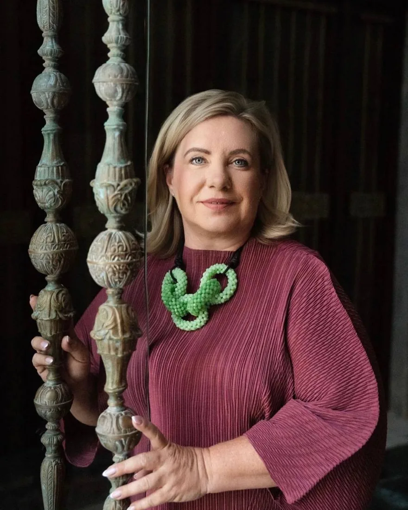
Родом зі Львівщини. Понад 30 років — на перетині двох культур, України та Іспанії. Філологиня (освіта в Україні та в Університеті Барселони), присяжна перекладачка й правова експертка в іспанській системі. Працює українською, іспанською, італійською та англійською. У 2017 році заснувала асоціацію на Гран-Канарії й відтоді її очолює.
Більше про Олесю тут
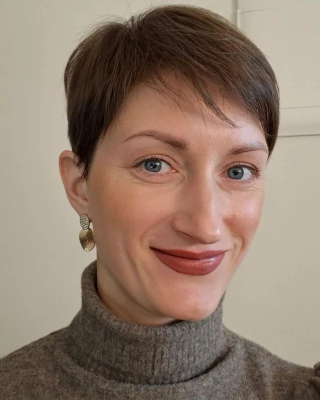
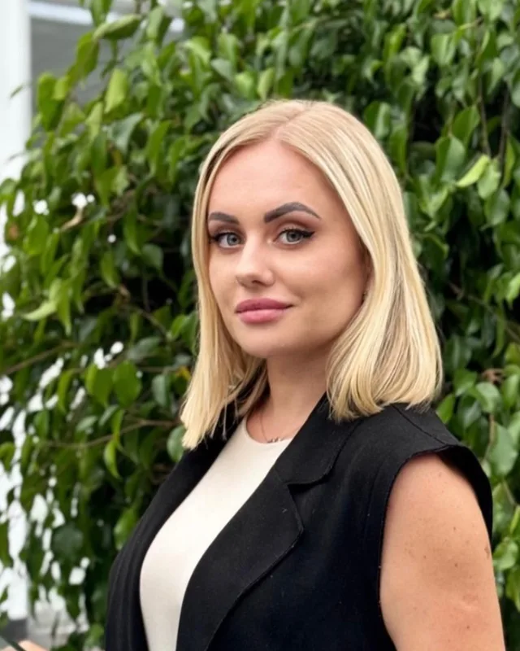
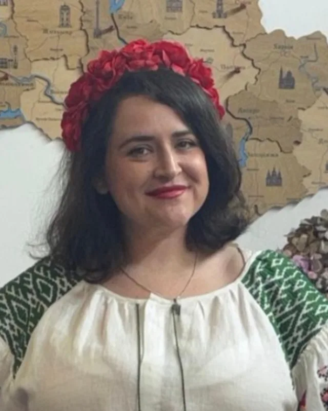
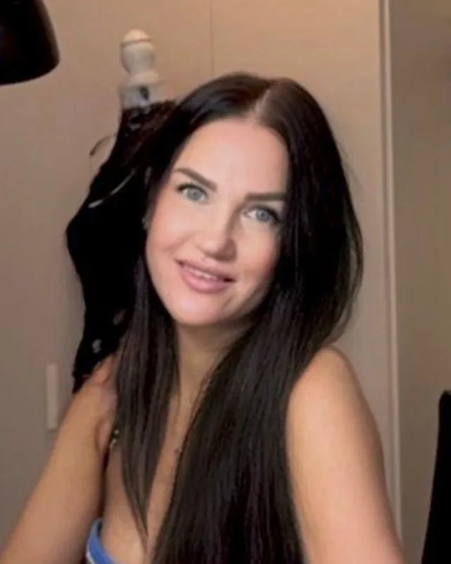
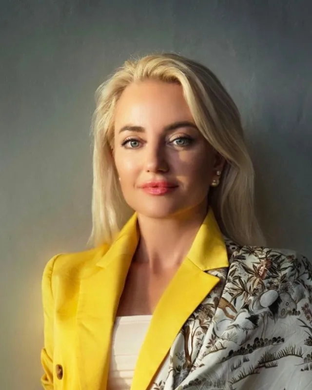
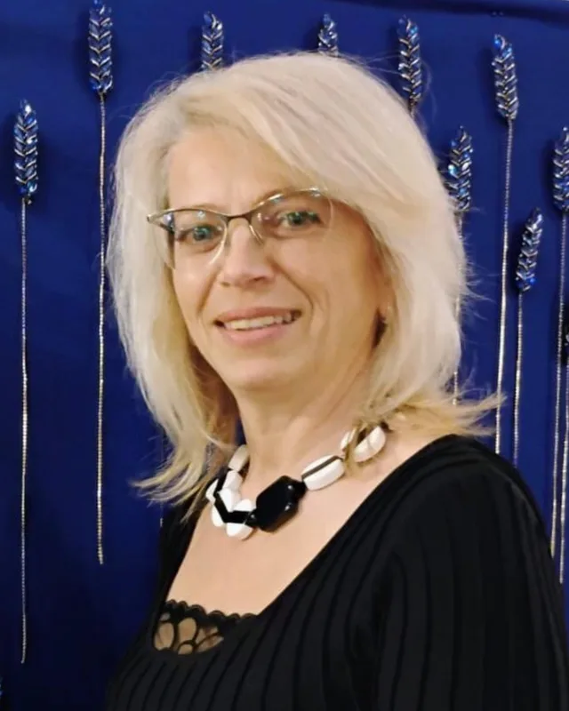
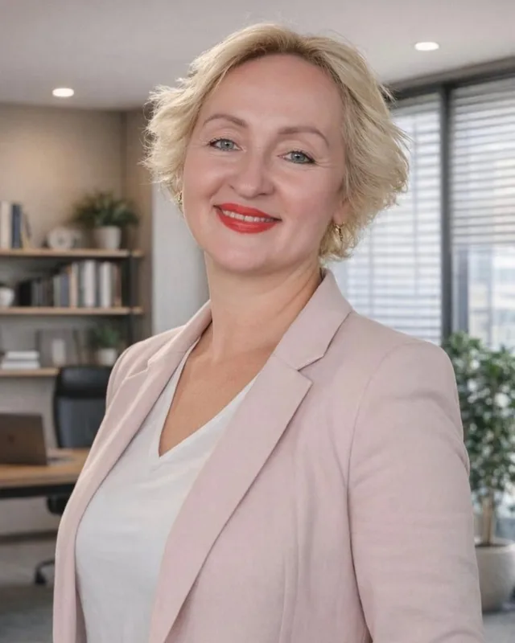
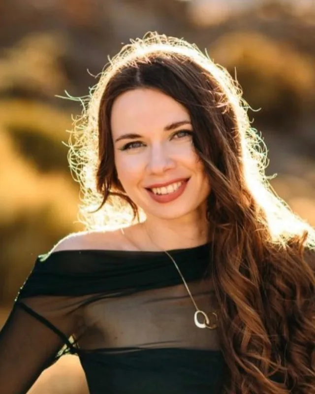
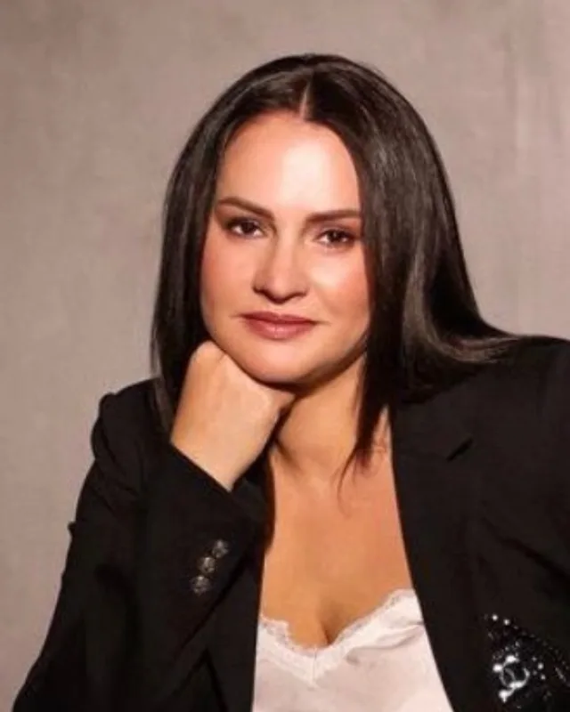
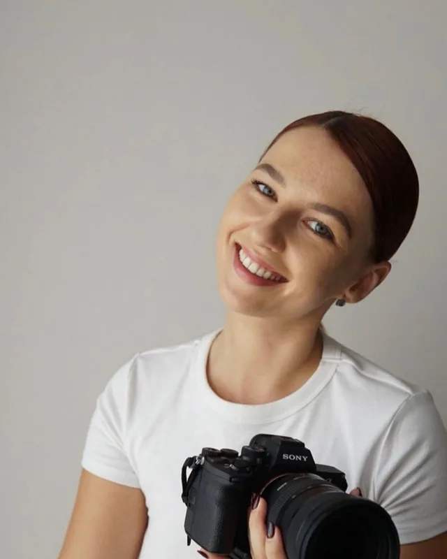
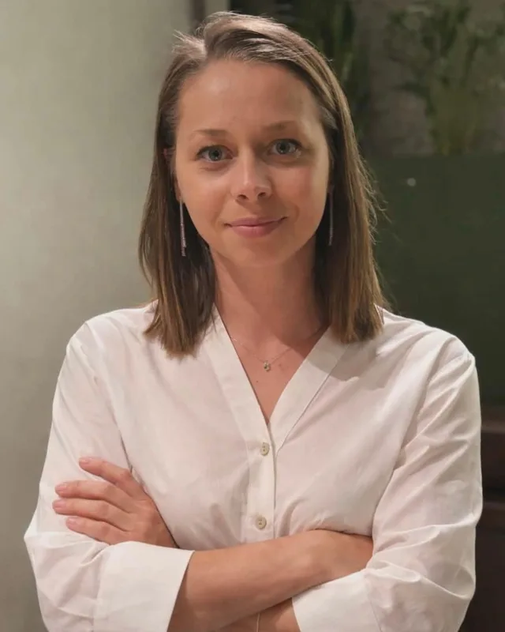
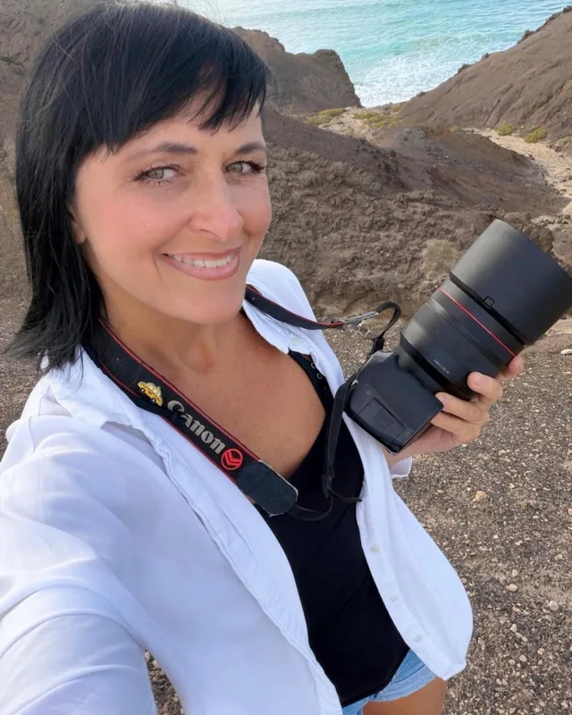
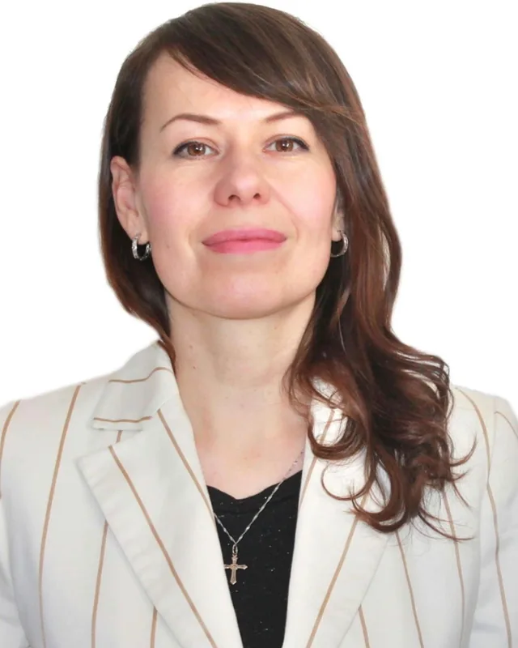
Якщо ти щойно приїхав на Канари або живеш тут давно — ми поруч.
Консультації щодо проживання, статусу, реєстрації та трудових прав. Досвід присяжної перекладачки в іспанській системі.
Пошук житла, іспанські регуляції, відкриття рахунку, документи.
Тренінги з пошуку роботи, складання CV, підготовка до іспанського ринку праці.
Підтримка освіти дітей, ресурси для вивчення іспанської, курси разом з ECCA.
Зв'язок зі спеціалістами. Психологиня асоціації Євгенія Булах (Тенерифе) готова надати підтримку.
Координація гуманітарних ініціатив і розподіл допомоги для тих, хто її найбільше потребує.
Шукаєш роботу в Іспанії? Перевіримо твоє готове резюме, щоб воно працювало на тебе.
За потреби допоможемо також скласти резюме.
Подивимося на твоє резюме і знайдемо, що саме заважає роботодавцю побачити твій досвід.
👉 Записатися у WhatsAppОнлайн-школа іспанської мови для дорослих з Гран-Канарії. Її заснувала президентка асоціації Олеся Лилак-Чижович.
Перейти на сайт школи →Твоя підтримка допомагає нам підтримувати українців на Канарах і будувати сильнішу спільноту.
Ми відкриті перед нашою громадою, донорами та партнерами. Прозорість — наш обов'язок.
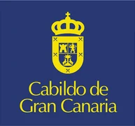
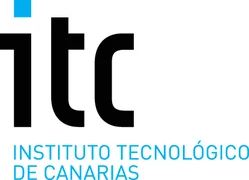
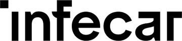
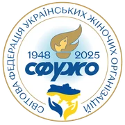
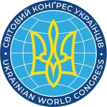
Наша сила — у людях. Кожен, хто долучається, робить асоціацію сильнішою.